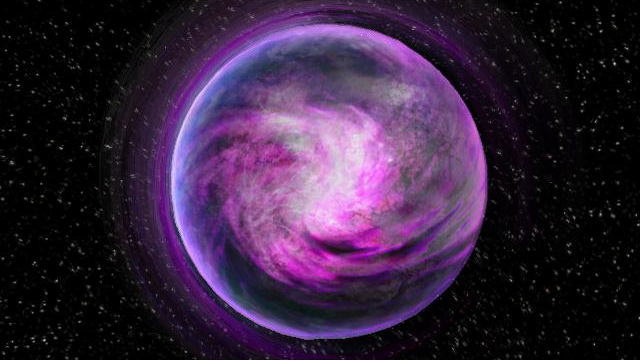
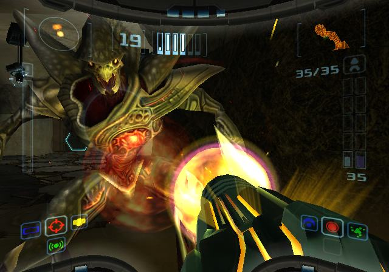
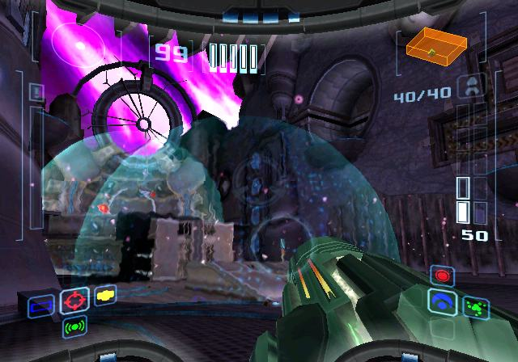
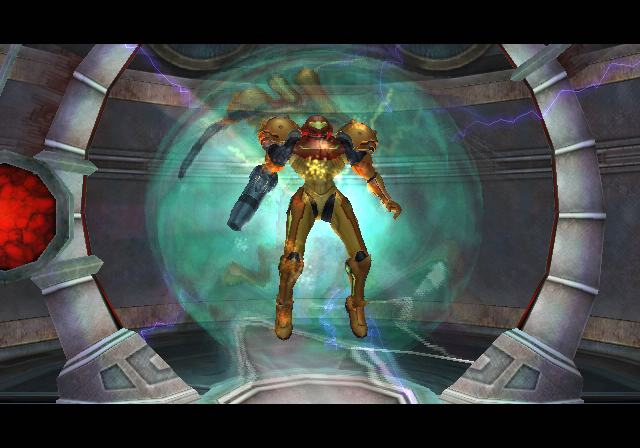
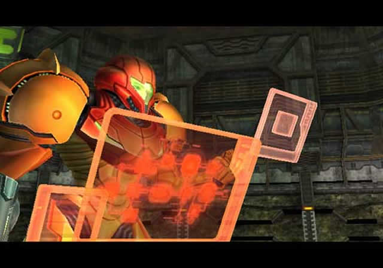
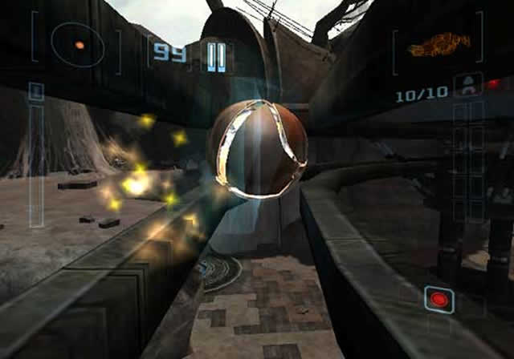

Samus riceve il file di una missione secondo cui
sono stati persi i contatti con la Squadra Bravo, la cui ultima locazione era il pianeta Aether.
Con l'incarico di ritrovarli e prestargli assistenza, Samus parte alla volta del pianeta.
Come entra nell'atmosfera però, la sua navicella attraversa una turbolenta tempesta violacea per poi
essere colpita da un fulmine che la fa precipitare all'interno di una caverna.
Seguendo le tracce dei soldati che sta cercando, Samus incontra uno strano essere blu scuro con addosso
quella che sembra ricordare la sua Tuta Energia. Incuriosita, inizia ad inseguire la creatura che subito
dopo attraversa un portale. Samus entra nel portale e si ritrova in una versione alternativa del pianeta,
Aether Oscuro, la cui atmosfera velenosa inizia lentamente a danneggiare la sua tuta. La creatura è poco
più avanti e sta assorbendo del Phazon, una sostanza altamente radioattiva bluastra.
Subito dopo Samus viene attaccata dalle creature ostili del posto, ma riesce comunque a mettersi in salvo
e a continuare le sue ricerche.
Screenshot




